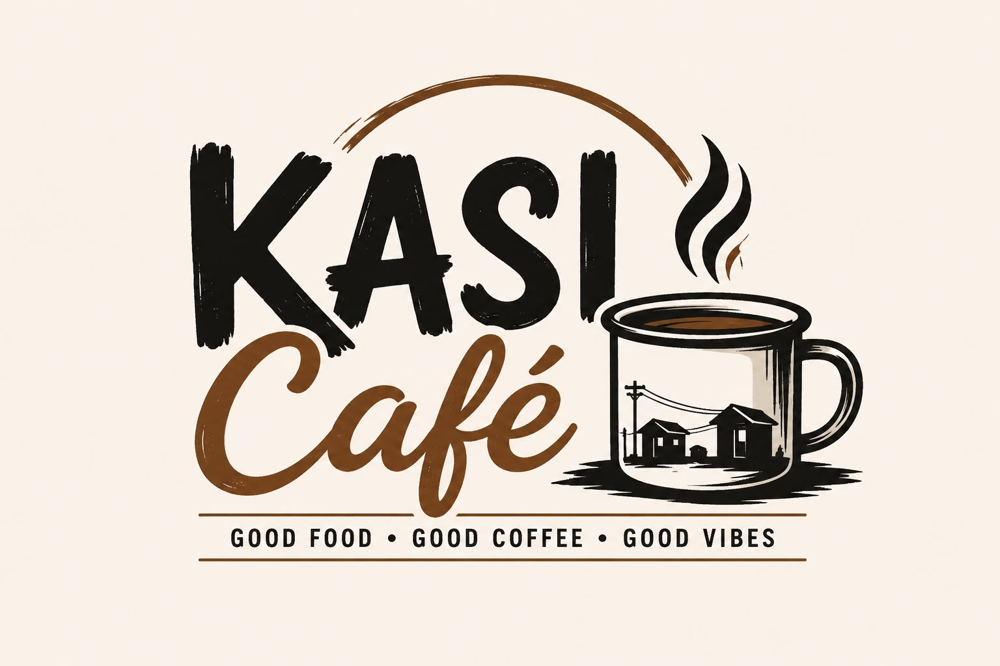

Kasi Cafe is a small coffe shop located in the heart of Lebowakgomo,Limpopo.We serve freshly brewed coffee,teas, and homemade treats in a warm and welcoming space where the community can relax and connect.
What makes Kasi Cafe special is our commitment to quality and local flavour . Every cup is made using locally sourced ingredients, and our menu is designed to bring people together , whether you are stopping by for s quick coffee or settling in for a quick coffee or settling in for a slice of cheesecake.

Here is a selection of what we offer:
| Product | Size | Price |
|---|---|---|
| Cappucino | Large | R35 |
| Coffee | Large | R30 |
| Cheesecake | Slice | R40 |
a href="0676857872">Contact Us for more information.